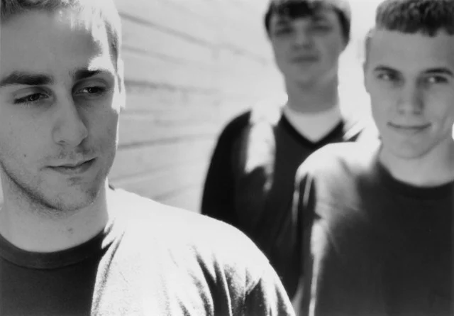
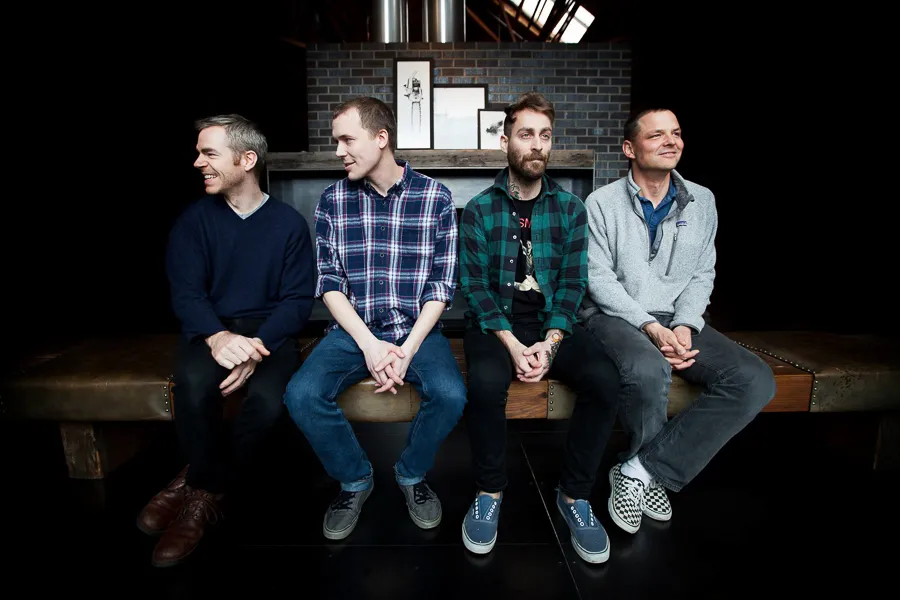
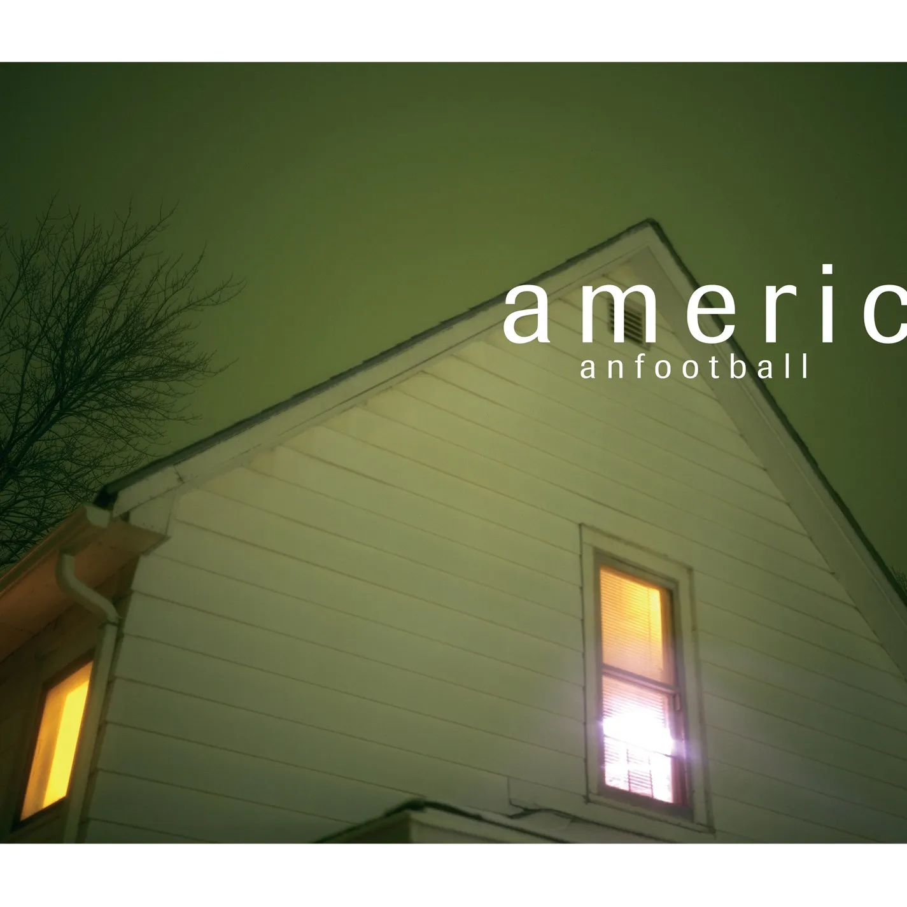

American Football (usualmente estilizado todo en minúsculas como american football o americ anfootball) es una banda estadounidense de math rock y emo proveniente de Urbana, Illinois, activa desde 1997 hasta el año 2000, y del 2014 a la actualidad. La banda fue formada por el guitarrista y cantante Mike Kinsella, el guitarrista Steve Holmes y el baterista y trompetista Steve Lamos. Más tarde se unió el bajista Nate Kinsella.
A pesar del corto periodo de vida que tuvo la primera etapa de la banda, su álbum homónimo debut terminaría convirtiéndose en uno de los más aclamados discos de math rock y emo de su época. Kinsella y Lamos comenzaron tocando juntos con Dave Johnson y Allen Johnson en 1997, bajo el nombre de The One Up Downstairs, en el cual, Kinsella era el vocalista exclusivo. Grabaron tres canciones con ese nombre, con la intención de lanzar su primer 7" en Polyvinyl Records, pero la banda, por razones desconocidas, se disolvió antes de lanzar ese 7", así que, las canciones grabadas fueron dejadas de lado. Finalmente, las tres canciones grabadas por The One Up Downstairs fueron lanzadas en el año 2006 como EP que se distribuyó por descarga digital en Polyvinyl Records.
 
